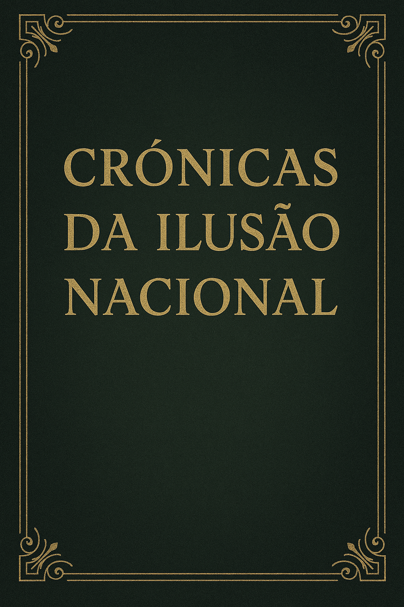

Publicado em 2025-04-11 22:19:50
por Francisco Gonçalves
Publicado em Fragmentos do Caos
Portugal, esse país onde as urgências fecham por falta de médicos, as escolas escasseiam em professores, os comboios não chegam a horas — e no entanto, surgem 10 mil milhões de euros como por milagre, anunciados pelo governo como se fosse um gesto nobre. Mas não é. É uma afronta. Um atentado político e ético ao povo português.
E ainda por cima, uma "iniciativa" de um governo em gestão, e portanto sem legitimidade para endividar ainda mais o país. Luís Montenegro não tem neste momento autoridade nem credibilidade, para anunciar este tipo de medidas, descaradamente populistas.
Num país endividado até à medula, onde se pedem sacrifícios aos mais frágeis, este pacote de apoios às empresas exportadoras, apresentado como “estratégico”, revela-se, no fundo, uma distribuição de riqueza futura que o Estado ainda nem sequer possui. Um presente dourado pago com dívida pública, ou seja, com os ossos e o sangue das próximas gerações.
Enquanto a Comissão Europeia pede contenção orçamental, o governo português tenta mostrar-se arrojado — não por coragem política, mas por submissão aos lobbies económicos, por fidelidade aos interesses instalados, por medo de desagradar aos donos do sistema.
E o povo? Esse assiste, cansado, enganado. Dizem-lhe que o país está melhor, que a economia cresce, que as contas estão certas. Mas no dia seguinte continua à espera de consulta no centro de saúde, de um professor para o filho, de uma oportunidade que não seja precária, de um Estado que não se ajoelhe sempre diante do capital.
Este plano de 10 mil milhões não é um investimento visionário — é um saque silencioso.
Não é desenvolvimento — é maquilhagem sobre ruínas.
Não é justiça económica — é a continuação da pilhagem consentida, em que os recursos do povo são canalizados para os cofres de quem já tem acesso privilegiado a tudo.
Se Portugal é pobre, não pode fingir que é rico para impressionar Bruxelas ou os mercados.
Se Portugal é digno, não pode aceitar que se governe a distribuir o que não existe, em nome de um progresso que não se vê.
É tempo de acordar.
Porque cada milhão gasto sem critério é um milhão arrancado à escola pública, à saúde, ao futuro.
E cada plano mirabolante sem escrutínio é mais uma pedra no túmulo da democracia.